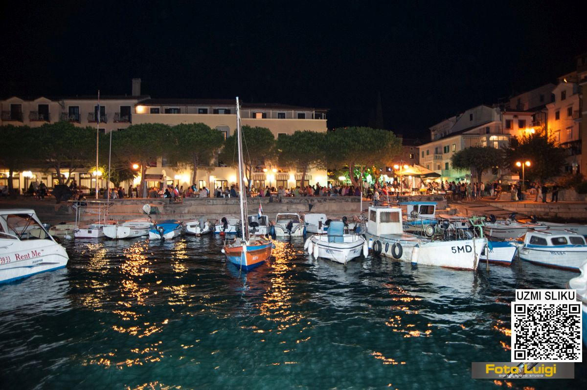
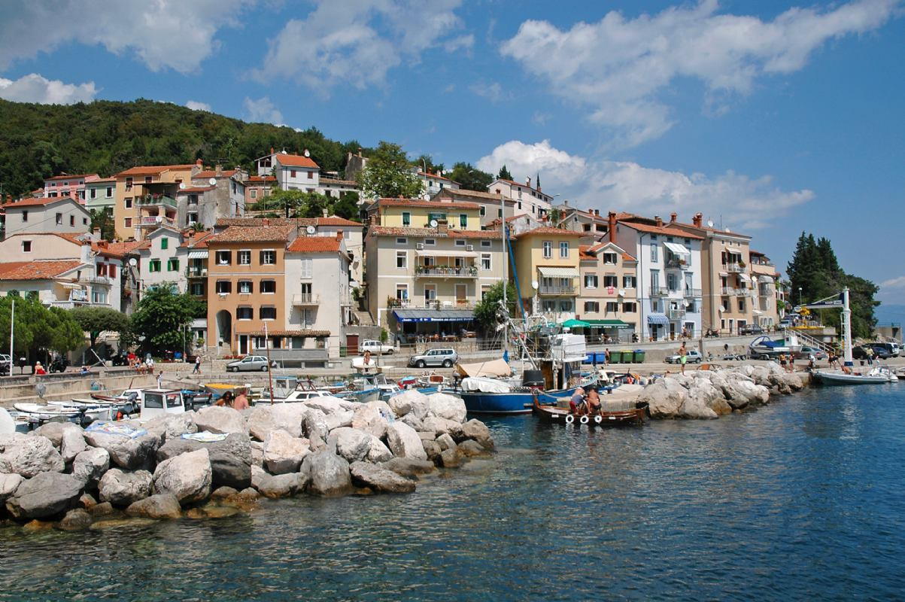

Mošćenička Draga
Mošćenička Draga najpoznatija je po svojim plažama.
Njena plaža Sipar jedna je od najjljepših na Kvarneru, a u skrovitim mjestima uz obalnu šetnicu nalaze se i brojne druge, male, prirodne plaže, daleko od gužve i neželjenih pogleda. Planinske padine stanovnici Mošćeničke Drage pokorili su brojnim putevima i stazama, nekad namijenjenima za vezu naselja u brdima s ribarskom lukom uz more, a danas idealnima za šetnje i boravak u prirodi. Ističe se pritom mitsko-povijesna edukativna staza Trebišća – Perun, koncipirana kao prava „detektivska priča“ koja kroz postepene tragove šetačima i čitateljima otkriva osnove staroslavenskih vjerovanja i njihove mitologije.
Mošćeničku Dragu kao svoje odredište biraju gosti skloni opuštanju i mirnom odmoru.

Ribarska fešta, 2019.
Šetalište (lungomare) prema plaži Sv. Ivan budi u vama romantiku, a cijelim vas obalnim putem prati šum mora i miris mediteranske vegetacije. Kruna je tog puta vila Zagreb (ex Ossoinack), za kojom ne zaostaje niz šarmantnih starih vila prema plaži Sv. Ivan. Dražanski stari grad sa zbijenim kućama i klancima spušta se strmo sve do mora. U njegovom se temelju ulegnula mala simpatična lučica u kojoj su smješteni ribarski brodovi, manje barke, a u ljetnim mjesecima mala marina za brodice turista. Mošćenička Draga glavno je administrativno središte općine. Samo mjesto broji oko 900 stanovnika koji se uglavnom bave turizmom i ribarstvom.

Prednji dio staroga grada.